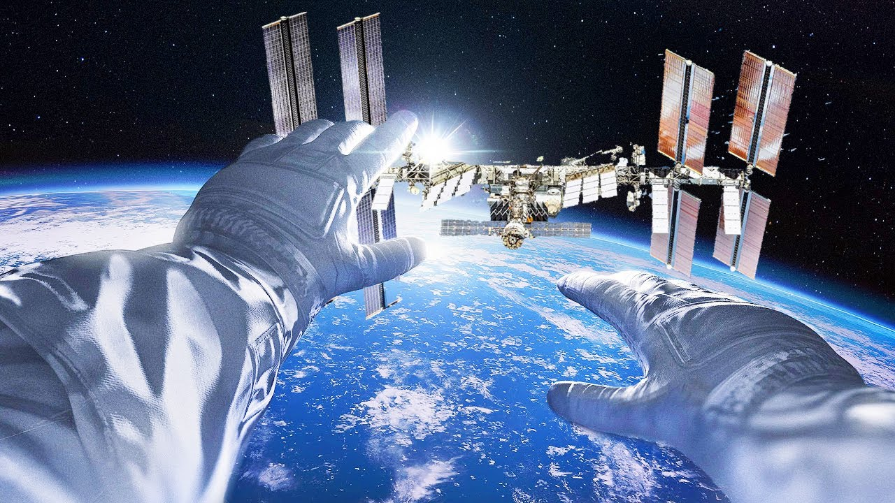
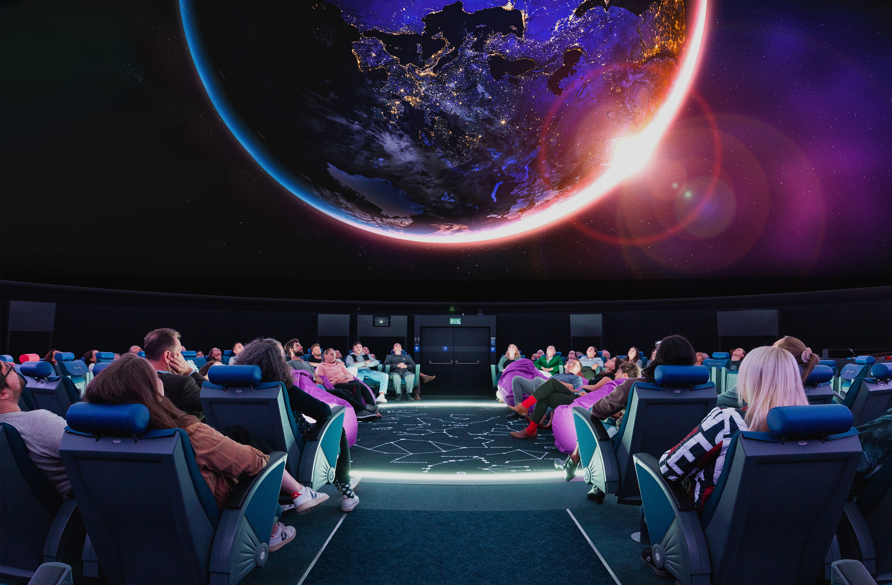
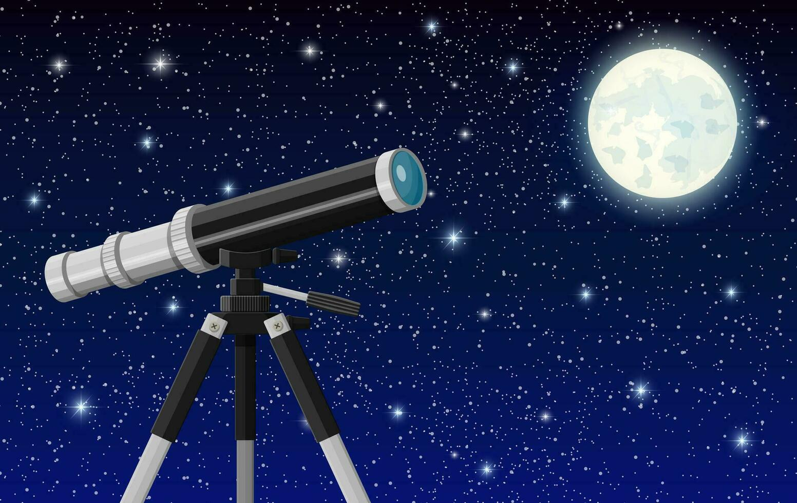
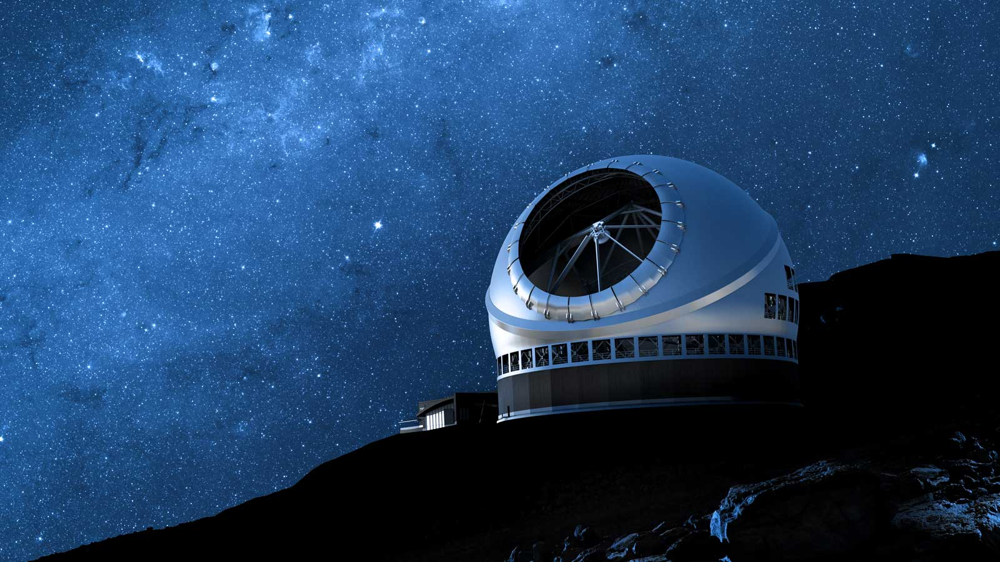

Chez Cosmos Explorer, nous vous proposons des expériences uniques pour explorer le système solaire, que ce soit virtuellement grâce à nos technologies immersives de pointe ou réellement à travers nos observations astronomiques guidées. Notre mission est de vous faire vivre l'aventure spatiale et de vous rapprocher des merveilles de notre système solaire.

Immergez-vous complètement dans le système solaire grâce à nos casques de réalité virtuelle dernière génération. Marchez sur la surface de Mars, survolez les anneaux de Saturne, ou observez la Grande Tache Rouge de Jupiter comme si vous y étiez. Nos simulations sont basées sur les données scientifiques les plus récentes pour vous offrir une expérience à la fois divertissante et éducative.
• Durée : Sessions de 30 minutes à 2 heures
• Capacité : Jusqu'à 10 personnes simultanément
• Âge minimum : 8 ans (accompagné d'un adulte)
• Langues : Français, anglais

Notre planétarium numérique vous offre une vue imprenable sur le ciel étoilé et les planètes du système solaire. Guidés par nos astronomes, vous voyagerez à travers l'espace et le temps pour découvrir les mystères de notre voisinage cosmique. Nos séances thématiques abordent différents aspects du système solaire, de la formation des planètes aux dernières découvertes scientifiques.
• Durée : 1 heure par séance
• Capacité : 50 personnes
• Séances spéciales : Pour écoles et groupes sur réservation
• Thèmes variés : Une nouvelle thématique chaque mois

Rejoignez nos astronomes professionnels pour des sessions d'observation nocturne à l'aide de télescopes professionnels. Observez les planètes, les étoiles, les nébuleuses et les galaxies lointaines avec des explications en direct de nos experts. Ces sessions sont adaptées à tous les niveaux, des débutants aux astronomes amateurs expérimentés.
• Durée : 2 à 3 heures (soirée)
• Fréquence : 2 à 3 fois par semaine
• Capacité : 15 à 25 participants
• Matériel fourni : Télescopes professionnels, jumelles, cartes du ciel
• Lieu : Observatoire de Cosmos Explorer ou sites d'observation à faible pollution lumineuse
• Bonus : Photographie astronomique disponible

Partez à l'aventure avec nos expéditions astronomiques vers les meilleurs sites d'observation au monde. Que ce soit pour observer une éclipse solaire, les aurores boréales ou simplement pour profiter d'un ciel exceptionnellement étoilé, nos voyages vous offrent une expérience inoubliable combinant astronomie, découverte culturelle et aventure.
• Destinations : Chili (désert d'Atacama), Islande, Namibie, Hawaii, et plus
• Durée : De 5 à 15 jours selon la destination
• Groupe : 8 à 15 participants
• Encadrement : Guide astronome professionnel + guide local
En plus de nos services d'exploration, nous proposons des programmes éducatifs adaptés à tous les âges et niveaux de connaissance :
• Ateliers pour enfants : Activités ludiques et éducatives pour initier les plus jeunes à l'astronomie et au système solaire
• Cours d'astronomie : Formation complète sur l'astronomie, de l'initiation aux cours avancés pour amateurs passionnés
• Conférences thématiques : Présentations par des experts sur divers aspects du système solaire et de l'exploration spatiale
• Camps d'été astronomiques : Semaines d'immersion pour les jeunes passionnés d'astronomie
Pour réserver l'une de nos expériences d'exploration ou obtenir plus d'informations sur nos services, vous pouvez :
• Nous contacter via notre formulaire en ligne
• Nous appeler au (418) 789-6789
• Nous rendre visite à notre centre Cosmos Explorer à Saint-Théophile
Nous proposons également des forfaits personnalisés pour les groupes, les écoles et les entreprises. N'hésitez pas à nous contacter pour discuter de vos besoins spécifiques.